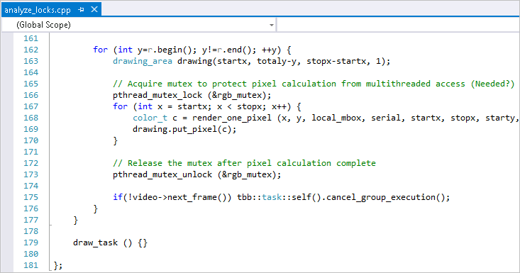

In the
Source window, you located the
critical section that caused a
significant wait while the processor cores were underutilized and generated
multiple wait count. Focus on this line and do the following:
In the
Source window, you located the
critical section that caused a
significant wait while the processor cores were underutilized and generated
multiple wait count. Focus on this line and do the following:
Open the Code Editor
Click the
 Source Editor button to open the
analyze_locks.cpp file
in your default editor at the hotspot code line:
Source Editor button to open the
analyze_locks.cpp file
in your default editor at the hotspot code line:

Remove the Lock
The rgb_mutex was introduced to protect calculation from multithreaded access. The brief analysis shows that the code is thread safe and the mutex is not really needed.
To resolve this issue:
Note
The steps below are provided for Microsoft Visual Studio* 2013. Steps for other versions of Visual Studio IDE may slightly differ.
Comment out code lines 166 and 173 to disable the mutex.
From Solution Explorer, select the analyze_locks project.
From Visual Studio menu, select Build > Rebuild analyze_locks.
The project is rebuilt.
From Visual Studio menu, select Debug > Start Without Debugging to run the application.
Visual Studio runs the analyze_locks.exe. Note that execution time reduced from 16.848 seconds to 2.652 seconds.